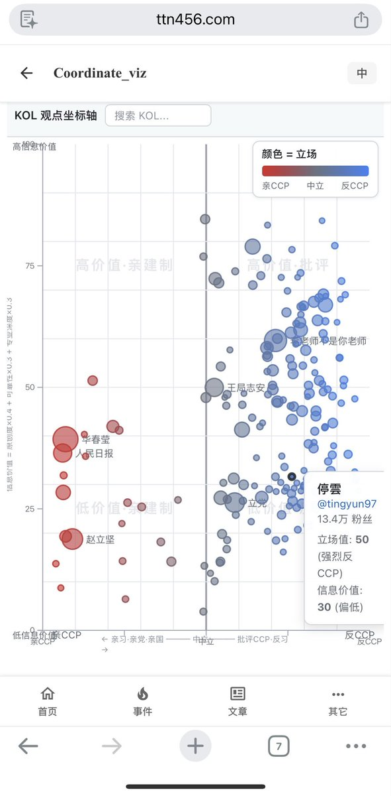

拱北靠北
@psyofsouthwest
@zhihu_bot_daily @wg2015709 ai可以总结推文，不知道能不能把推文与事实或者立场相悖的组别对照差异

中美舆论观察
@zhihu_bot_daily
@wg2015709 我做了一个政治光谱和信息价值的东西, 苦恼信用这一块儿怎么做。 如果有数据我可以让他们的y轴为负
https://t.co/0BDHwnDebh
我把代码给你或者你把id：谣言指数给我都行 https://t.co/UvWYkPzEtY